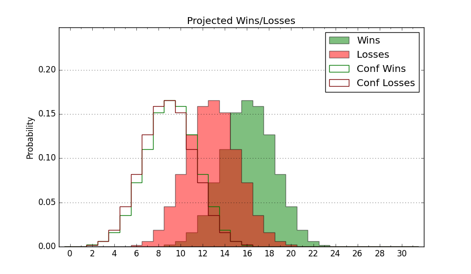

| Home | Game Probabilities | Conferences | Preseason Predictions | Odds Charts | NCAA Tournament |
| City: | Tampa, Florida | |
| Conference: | American (1st)
| |
| Record: | 0-0 (Conf) 7-4 (Overall) | |
| Ratings: | Comp.: 2.6 (135th) Net: 2.7 (141st) Off: 103.3 (176th) Def: 100.6 (132nd) SoR: 0.5 (160th) |
| Remaining | ||||||
|---|---|---|---|---|---|---|
| Date | Opponent | Win Prob | Pred. | |||
| 1/4 | Temple (202) | 75.6% | W 75-67 | |||
| 1/7 | @ UAB (185) | 45.4% | L 74-75 | |||
| 1/12 | Rice (183) | 73.8% | W 76-68 | |||
| 1/18 | @ Memphis (41) | 11.9% | L 68-84 | |||
| 1/21 | Wichita St. (125) | 62.0% | W 73-70 | |||
| 1/24 | @ Temple (202) | 47.7% | L 71-72 | |||
| 1/27 | UTSA (290) | 88.1% | W 85-70 | |||
| 1/31 | @ East Carolina (208) | 49.1% | L 70-71 | |||
| 2/3 | @ North Texas (77) | 20.6% | L 59-68 | |||
| 2/6 | Charlotte (121) | 60.7% | W 67-64 | |||
| 2/10 | @ Rice (183) | 45.2% | L 71-73 | |||
| 2/14 | Tulsa (203) | 75.8% | W 74-66 | |||
| 2/18 | Florida Atlantic (21) | 19.4% | L 69-79 | |||
| 2/21 | @ UTSA (290) | 68.6% | W 81-75 | |||
| 2/25 | SMU (52) | 34.8% | L 68-72 | |||
| 3/2 | @ Charlotte (121) | 31.2% | L 63-68 | |||
| 3/5 | Tulane (105) | 56.1% | W 82-80 | |||
| 3/9 | @ Tulsa (203) | 47.9% | L 69-70 | |||
| Previous | Game Score | |||||
| Date | Opponent | Win Prob | Result | Off | Def | Net |
| 11/9 | South Carolina St. (337) | 93.4% | W 96-52 | 10.2 | 21.1 | 31.3 |
| 11/15 | Central Michigan (339) | 93.5% | L 63-68 | -26.6 | -10.0 | -36.5 |
| 11/19 | Northern Iowa (106) | 56.3% | W 74-65 | 2.6 | 5.8 | 8.4 |
| 11/22 | Maine (242) | 81.1% | L 59-70 | -23.1 | -10.5 | -33.6 |
| 11/30 | @Hofstra (97) | 24.5% | L 63-82 | -7.5 | -14.9 | -22.4 |
| 12/2 | @Massachusetts (109) | 27.8% | L 56-66 | -22.9 | 21.4 | -1.5 |
| 12/9 | (N) Florida St. (112) | 43.5% | W 88-72 | 13.5 | 10.9 | 24.4 |
| 12/12 | Arkansas Pine Bluff (331) | 92.5% | W 104-86 | 22.0 | -19.7 | 2.3 |
| 12/16 | Loyola Chicago (136) | 65.0% | W 77-64 | 16.3 | 1.8 | 18.1 |
| 12/22 | Albany (250) | 82.3% | W 89-73 | 9.3 | -0.2 | 9.1 |
| 12/29 | Alabama St. (285) | 87.8% | W 73-70 | 8.9 | -18.8 | -9.9 |
| Stats & Trends | |||||
|---|---|---|---|---|---|
| Current | Day | Week | Month | Season | |
| Composite | 2.6 | -- | -1.2 | +3.4 | +0.2 |
| Comp Rank | 135 | -- | -9 | +33 | -3 |
| Net Efficiency | 2.7 | -- | -1.7 | +8.0 | -- |
| Net Rank | 141 | -- | -12 | +86 | -- |
| Off Efficiency | 103.3 | -- | +1.0 | +8.8 | -- |
| Off Rank | 176 | -- | +19 | +123 | -- |
| Def Efficiency | 100.6 | -- | -2.7 | -0.8 | -- |
| Def Rank | 132 | -- | -46 | -1 | -- |
| SoS Rank | 346 | -- | -20 | -13 | -- |
| Exp. Wins | 16.1 | -0.1 | -0.2 | +2.6 | -0.4 |
| Exp. Conf Wins | 9.1 | -0.1 | -0.3 | +1.3 | +0.1 |
| Conf Champ Prob | 1.4 | +0.2 | +0.1 | +0.9 | -2.2 |

| Advanced Stats | ||
|---|---|---|
| Stat | Value | Rank |
| Off Eff FG % | 0.473 | 264 |
| Off Ast Ratio | 0.148 | 121 |
| Off ORB% | 0.274 | 182 |
| Off TO Rate | 0.122 | 27 |
| Off FT Ratio | 0.360 | 117 |
| Def Eff FG % | 0.497 | 168 |
| Def Ast Ratio | 0.146 | 215 |
| Def ORB% | 0.298 | 254 |
| Def TO Rate | 0.173 | 47 |
| Def FT Ratio | 0.360 | 243 |